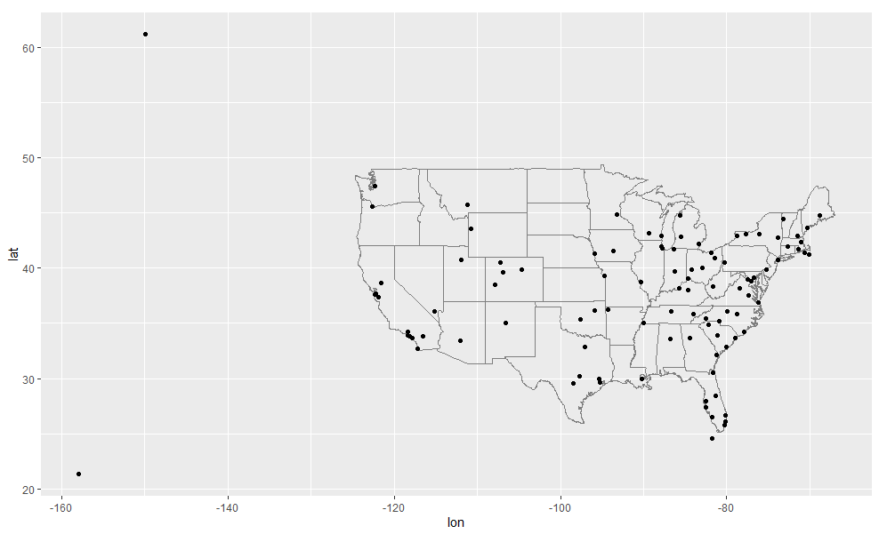

6.4 변환 조인(Mutating Join)
한 쌍의 테이블을 결합하기 위해 살펴 볼 첫 번째 도구는 변환 조인(Mutating Join) 이다. 변환조인을 사용하면 두 테이블의 변수를 결합할 수 있다. 먼저 관측값을 키로 매칭시킨 다음, 한 테이블에서 다른 테이블로 변수들을 복사한다.
mutate() 와 마찬가지로 조인 함수는 오른쪽에 변수를 추가하므로 이미 많은 변수가 있는 경우 새 변수가 출력되지 않는다. 이 예제에서는 어떤 일이 일어나는지 더 쉽게 보기 위해 더 좁은 데이터셋을 작성한다.
flights2 <- flights %>%
select(year:day, hour, origin, dest, tailnum, carrier)
flights2## # A tibble: 336,776 x 8
## year month day hour origin dest tailnum carrier
## <int> <int> <int> <dbl> <chr> <chr> <chr> <chr>
## 1 2013 1 1 5 EWR IAH N14228 UA
## 2 2013 1 1 5 LGA IAH N24211 UA
## 3 2013 1 1 5 JFK MIA N619AA AA
## # ... with 336,773 more rows(RStudio에서는 View() 를 사용하여 이 문제를 피할 수도 있음을 기억하라.)
flight2 데이터에 항공사 전체 이름을 추가하려고 한다고 가정하자. left_join() 으로 airlines 와 flights2 데이터프레임을 결합할 수 있다.
flights2 %>%
select(-origin, -dest) %>%
left_join(airlines, by = "carrier")## # A tibble: 336,776 x 7
## year month day hour tailnum carrier name
## <int> <int> <int> <dbl> <chr> <chr> <chr>
## 1 2013 1 1 5 N14228 UA United Air Lines Inc.
## 2 2013 1 1 5 N24211 UA United Air Lines Inc.
## 3 2013 1 1 5 N619AA AA American Airlines Inc.
## # ... with 336,773 more rowsflights2 은 airlines 와 결합하여, 새로운 변수 name 이 추가되었다. 이것이 내가 이 유형의 조인을 변환 조인이라고 부르는 이유이다. 이 경우 mutate() 와 R 의 base 서브세팅 작업을 사용하여 같은 위치에 도달할 수 있다.
flights2 %>%
select(-origin, -dest) %>%
mutate(name = airlines$name[match(carrier, airlines$carrier)])## # A tibble: 336,776 x 7
## year month day hour tailnum carrier name
## <int> <int> <int> <dbl> <chr> <chr> <chr>
## 1 2013 1 1 5 N14228 UA United Air Lines Inc.
## 2 2013 1 1 5 N24211 UA United Air Lines Inc.
## 3 2013 1 1 5 N619AA AA American Airlines Inc.
## # ... with 336,773 more rows- 그러나 이 방법은 여러 변수를 매치시켜야 할 경우 일반화하기 어렵고, 또 전체적인 의도를 파악하기 위해서는 코드를 자세히 읽어야 한다는 단점이 있다.
다음 절에서는 변환 조인의 작동 방식에 대해 자세히 설명한다. 우선 조인을 어떻게 시각적으로 표현하는지부터 배운다. 그런 다음 이를 사용하여 4개의 뮤테이팅 조인 함수, 즉 하나의 내부 조인(inner join)과 3개의 외부 조인(outer join)을 설명한다. 실제 데이터로 작업할 때 키가 항상 관측값을 고유하게 식별하지는 않기 때문에 다음으로는 고유한 매치가 없을 때 발생하는 상황에 대해 이야기하겠다. 마지막으로 조인이 정해졌을 때 어떤 변수가 이 조인의 키인지 dplyr 에 알려주는 방법을 배운다.
6.4.1 조인 이해하기
조인이 어떻게 작동하는지 배우기 위해 시각적 표현을 사용한다.
6.4.1.1 예제 데이터의 생성

x <- tribble(
~key, ~val_x,
1, "x1",
2, "x2",
3, "x3"
)
x## # A tibble: 3 x 2
## key val_x
## <dbl> <chr>
## 1 1 x1
## 2 2 x2
## 3 3 x3y <- tribble(
~key, ~val_y,
1, "y1",
2, "y2",
4, "y3"
)
y## # A tibble: 3 x 2
## key val_y
## <dbl> <chr>
## 1 1 y1
## 2 2 y2
## 3 4 y3색상이 있는 열은 ’키’ 변수(컬럼)를 나타내며, 테이블 사이의 행을 일치(대응, matching)시키는 데 사용된다. 회색 열은 함께 따라가는 ’값’ 열(컬럼)을 나타낸다. 이 예제에서는 단일 키 변수와 단일 값 변수가 있지만, 다중 키와 다중 값으로 자연스럽게 일반화된다.
조인은 테이블 x 의 각 행을, 테이블 y 의 행과 대조하면서 (0개, 1 개 또는 여러 행에) 연결하는 방법이다. 다음 다이어그램은 각각의 매칭 후보를 한 쌍의 선의 교차점으로 보여준다. (다음의 그림은 x와 y의 모든 연결 가능성을 보여 준다. Cartesian Product)

(주의 깊게 살펴보면 x 의 키 열과 값 열의 순서가 바뀌었음을 알 수 있다. 이는 조인이 키를 기반으로 매칭하며 값은 단지 따라간다는 것을 강조하기 위한 것이다.)
실제 조인에서는 매치 항목이 점으로 표시된다. 도트 수 = 매치 수 = 출력의 행 수이다.

6.4.2 내부 조인 (inner join)
가장 간단한 조인 유형은 내부 조인 이다. 내부 조인은 테이블 x의 키와 테이블 y의 키가 같을 때 두 관측값을 매칭한다.

(정확하게 말하면 같음 연산자(equality operator)를 사용하여, 키가 매치되기 때문에 내부 동등 조인(equijoin) 이다. 대부분의 조인은 동등 조인이므로 우리는 일반적으로 이러한 상세한 내용을 생략한다.)
내부 조인(inner join)의 출력은 키, x 값 및 y 값을 포함하는 새로운 데이터프레임이다. by 를 사용하여 어떤 변수가 키인지를 지정한다.
x %>%
inner_join(y, by = "key")## # A tibble: 2 x 3
## key val_x val_y
## <dbl> <chr> <chr>
## 1 1 x1 y1
## 2 2 x2 y2- 내부 조인의 가장 중요한 특성은 매칭되지 않는 행은 결과에 포함되지 않는다는 점이다.
- 즉, 내부 조인은 관측값을 잃어버리기 쉽기 때문에 일반적으로 분석에 사용하기에 적합하지 않다.
6.4.3 외부 조인 (outer join)
내부 조인에서는 두 테이블 모두에 나타나는 관측값이 보존된다. 외부 조인(outer join)에서는 적어도 하나의 테이블에 있는 관측값은 보존된다.
외부 조인에는 세 가지 유형이 있다.
- 왼쪽 조인(left join) 은
x의 모든 관측값을 보존한다. - 오른쪽 조인(right join) 은
y의 모든 관측값을 보존한다. - 전체 조인(full join) 은
x와y의 모든 관측값을 보존한다.
이러한 조인은 각 테이블에 ’가상’ 관측값을 추가하여 작동한다. 이 관측값에는 항상 매칭되는 키 (다른 키가 매칭되지 않는 경우)와 NA 로 채워진 값이 있다.
그래픽으로 보면 다음과 같다.

# left_join()
x %>%
left_join(y, by = "key")## # A tibble: 3 x 3
## key val_x val_y
## <dbl> <chr> <chr>
## 1 1 x1 y1
## 2 2 x2 y2
## 3 3 x3 <NA># right_join()
x %>%
right_join(y, by = "key")## # A tibble: 3 x 3
## key val_x val_y
## <dbl> <chr> <chr>
## 1 1 x1 y1
## 2 2 x2 y2
## 3 4 <NA> y3# full_join()
x %>%
full_join(y, by = "key")## # A tibble: 4 x 3
## key val_x val_y
## <dbl> <chr> <chr>
## 1 1 x1 y1
## 2 2 x2 y2
## 3 3 x3 <NA>
## 4 4 <NA> y3가장 일반적으로 사용되는 조인은 왼쪽 조인이다. 매칭되지 않는 경우에도 원본 관측값을 보존하므로 다른 테이블에서 추가 데이터를 조회할 때마다 이 작업을 사용한다. 왼쪽 조인이, 작업 시 기본 조인이 되어야 한다. 다른 조인을 선호해야 하는 명백한 이유가 없다면 왼쪽 조인을 사용하라.
서로 다른 유형의 조인을 묘사하는 또 다른 방법은 벤 다이어그램을 사용하는 것이다.

그러나 이 표현법은 완벽하지 않다. 조인 유형들이 각각 어떤 테이블의 관측값을 보존하는지 알려주긴 하지만, 커다란 제약사항이 있다. 벤 다이어그램은 키가 고유하게 관측값을 식별하지 못할 때 어떤 일이 발생하는지를 표현할 수 없다.
6.4.4 중복키
지금까지 모든 테이블은 키가 고유하다고 가정했다. 하지만 항상 그런 것은 아니다. 이 절에서는 키가 고유하지 않은 경우 어떻게 되는지 설명한다. 두 가지 경우가 있다.
하나의 테이블에 중복값을 갖는 키가 있다. 중복키는 추가적인 정보를 넣을 때 유용한데 일반적으로 일대다 관계가 있기 때문이다.

출력에서 약간 다른 위치에 키 열을 놓은 것을 확인하라. 이것은 키가
y의 기본키이고x의 외래키임을 보여준다.x <- tribble( ~key, ~val_x, 1, "x1", 2, "x2", 2, "x3", 1, "x4" ) y <- tribble( ~key, ~val_y, 1, "y1", 2, "y2" ) left_join(x, y, by = "key")## # A tibble: 4 x 3 ## key val_x val_y ## <dbl> <chr> <chr> ## 1 1 x1 y1 ## 2 2 x2 y2 ## 3 2 x3 y2 ## 4 1 x4 y1두 테이블 모두 중복 키가 있다. 키가 어느 테이블에서도 고유하게 관측값을 식별하지 않기 때문에 이것은 일반적으로 에러이다. 중복 키를 결합하면 가능한 모든 조합인 데카르트곱(Cartesian product)을 얻을 수 있다.

x <- tribble(
~key, ~val_x,
1, "x1",
2, "x2",
2, "x3",
3, "x4"
)
y <- tribble(
~key, ~val_y,
1, "y1",
2, "y2",
2, "y3",
3, "y4"
)
left_join(x, y, by = "key")## # A tibble: 6 x 3
## key val_x val_y
## <dbl> <chr> <chr>
## 1 1 x1 y1
## 2 2 x2 y2
## 3 2 x2 y3
## # ... with 3 more rows6.4.5 키열 정의하기
지금까지 테이블 쌍은 항상 하나의 변수에 의해 조인되었으며 그 변수는 두 테이블에서 같은 이름을 가졌었다. 그 제약은 by = "key" 로 코드화되었다. by 에 다른 값을 사용하여 다른 방법으로 테이블을 연결할 수 있다.
기본값
by = NULL을 사용하면 두 테이블에 있는 모든 변수를 사용하며 이는 자연 조인(natural join)이라 부른다. 예를 들어flights및weather테이블은 공통 변수인year, month, day, hour, origin으로 매치된다.flights2 %>% left_join(weather)## Joining, by = c("year", "month", "day", "hour", "origin")## # A tibble: 336,776 x 18 ## year month day hour origin dest tailnum carrier temp dewp humid ## <int> <int> <int> <dbl> <chr> <chr> <chr> <chr> <dbl> <dbl> <dbl> ## 1 2013 1 1 5 EWR IAH N14228 UA 39.0 28.0 64.4 ## 2 2013 1 1 5 LGA IAH N24211 UA 39.9 25.0 54.8 ## 3 2013 1 1 5 JFK MIA N619AA AA 39.0 27.0 61.6 ## # ... with 336,773 more rows, and 7 more variables: wind_dir <dbl>, ## # wind_speed <dbl>, wind_gust <dbl>, precip <dbl>, pressure <dbl>, ## # visib <dbl>, time_hour <dttm>문자형 벡터
by = "x". 이것은 자연 결합과 같지만 일부 공통 변수만 사용한다. 예를 들어flights와planes에는year변수가 있지만 서로 다른 의미이므로tailnum으로만 조인하고 싶다.flights2 %>% left_join(planes, by = "tailnum")## # A tibble: 336,776 x 16 ## year.x month day hour origin dest tailnum carrier year.y type ## <int> <int> <int> <dbl> <chr> <chr> <chr> <chr> <int> <chr> ## 1 2013 1 1 5 EWR IAH N14228 UA 1999 Fixe~ ## 2 2013 1 1 5 LGA IAH N24211 UA 1998 Fixe~ ## 3 2013 1 1 5 JFK MIA N619AA AA 1990 Fixe~ ## # ... with 336,773 more rows, and 6 more variables: manufacturer <chr>, ## # model <chr>, engines <int>, seats <int>, speed <int>, engine <chr>year변수 (두 입력 데이터프레임 모두에 나타나지만 같지 않도록 제한시킴)는 접미사가 붙어서 출력에서 헷갈리지 않게 된 것을 확인하라.이름있는 문자 벡터,
by = c("a" = "b"). 테이블x의 변수a와 테이블y의 변수b를 매칭시킨다.x의 변수가 출력에 사용된다.예를 들어, 지도를 그리려면
flights데이터를 각 공항의 위치(lat과lon, 위도와 경도)가 포함된airports데이터와 결합해야 한다. 각 항공편에는 출발 공항(origin)과 도착 공항(dest)이 있으므로 어떤 것에 조인할지 지정해야 한다.flights2 %>% left_join(airports, c("dest" = "faa"))## # A tibble: 336,776 x 15 ## year month day hour origin dest tailnum carrier name lat lon alt ## <int> <int> <int> <dbl> <chr> <chr> <chr> <chr> <chr> <dbl> <dbl> <dbl> ## 1 2013 1 1 5 EWR IAH N14228 UA Geor~ 30.0 -95.3 97 ## 2 2013 1 1 5 LGA IAH N24211 UA Geor~ 30.0 -95.3 97 ## 3 2013 1 1 5 JFK MIA N619AA AA Miam~ 25.8 -80.3 8 ## # ... with 336,773 more rows, and 3 more variables: tz <dbl>, dst <chr>, ## # tzone <chr>flights2 %>% left_join(airports, c("origin" = "faa"))## # A tibble: 336,776 x 15 ## year month day hour origin dest tailnum carrier name lat lon alt ## <int> <int> <int> <dbl> <chr> <chr> <chr> <chr> <chr> <dbl> <dbl> <dbl> ## 1 2013 1 1 5 EWR IAH N14228 UA Newa~ 40.7 -74.2 18 ## 2 2013 1 1 5 LGA IAH N24211 UA La G~ 40.8 -73.9 22 ## 3 2013 1 1 5 JFK MIA N619AA AA John~ 40.6 -73.8 13 ## # ... with 336,773 more rows, and 3 more variables: tz <dbl>, dst <chr>, ## # tzone <chr>
6.4.6 연습문제
목적지별 평균 연착시간을 계산한 다음,
airports데이터프레임에 조인하여 연착의 공간 분포를 표시하라. 다음을 이용하여 미국 지도를 쉽게 그릴 수 있다.airports %>% semi_join(flights, c("faa" = "dest")) %>% ggplot(aes(lon, lat)) + borders("state") + geom_point() + coord_quickmap()
(
semi_join()이 무엇인지 몰라도 걱정하지 마라. 다음에 배울 것이다.) 점의 크기 또는 색깔로 각 공항의 평균 연착 시간을 표시할 수 있다.
flights에 출발지와 목적지의 위치 (즉,lat과lon)를 추가하라.여객기의 나이와 연착 시간 사이에 관계가 있는가?
어떤 기상 조건이 연착 가능성을 더 높이는가?
2013년 6 월 13 일에 무슨 일이 일어났는가? 연착의 공간 패턴을 표시한 다음 구글을 사용하여 날씨와 상호참조하라.
6.4.7 기타 구현
base::merge()는 네 가지 유형의 변환 조인을 모두 수행할 수 있다.
| dplyr | merge |
|---|---|
inner_join(x, y) |
merge(x, y) |
left_join(x, y) |
merge(x, y, all.x = TRUE) |
right_join(x, y) |
merge(x, y, all.y = TRUE), |
full_join(x, y) |
merge(x, y, all.x = TRUE, all.y = TRUE) |
특정
dplyr동사의 장점은 코드의 의도를 좀 더 명확하게 전달한다는 것이다. 즉, 조인 간의 차이는 실제로 중요하지만merge()인수에 숨어 있다.dplyr의 조인은 상당히 빠르며 행 순서를 어지럽히지 않는다.dplyr의 규칙은 SQL에 기반을 두므로 서로 옮겨쓰는 것은 복잡하지 않다.
| dplyr | SQL |
|---|---|
inner_join(x, y, by = "z") |
SELECT * FROM x INNER JOIN y USING (z) |
left_join(x, y, by = "z") |
SELECT * FROM x LEFT OUTER JOIN y USING (z) |
right_join(x, y, by = "z") |
SELECT * FROM x RIGHT OUTER JOIN y USING (z) |
full_join(x, y, by = "z") |
SELECT * FROM x FULL OUTER JOIN y USING (z) |
’INNER’및 ’OUTER’는 선택적이며 종종 생략된다.
inner_join(x, y, by = c("a" = "b"))과 같이 테이블 간에 다른 변수를 결합하는 것은, SQL에서 약간 다른 문법을 사용한다.SELECT * FROM x INNER JOIN y ON x.a = y.b. 이 구문에서 알 수 있듯이, SQL은dplyr보다 폭넓은 조인 유형을 지원하는데 등식이 아닌 다른 제약 조건을 사용하여 테이블을 연결할 수도 있다. (비동등 조인(non-equisjoins)라고도 함)